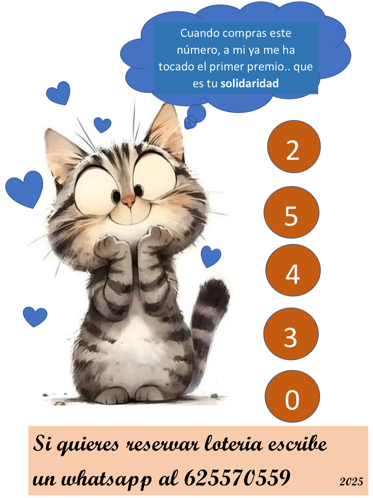

Noticias y eventos
🌙 Actualización sobre LunaNuestra pequeña Luna sigue luchando para recuperarse. Tenía prevista su operación de boquita, pero al llegar al veterinario vieron que estaba muy resfriada. Ha vuelto a la colonia, donde está tomando medicación y descansando. Gracias al sorteo solidario, el dinero para su cirugía ya está cubierto. Solo falta que Luna esté fuerte y lista para dar este paso. ¡Os seguiremos contando su evolución! |
|
|  |
🎟️ Lotería solidaria – Navidad 2025Ya está disponible nuestro número de la suerte para la Lotería de Navidad. Participando, ayudas directamente a los gatos del campus. ¡Gracias por apoyarles también en estas fiestas! ¡No te quedes sin tu participación! |

|
✨FINAL FELIZ✨Marie y Curie, adoptadas juntas la primera vez, devueltas juntas… Y ahora felices juntas en su nuevo hogar 😊 Nos alegramos por ellas muchísimo ❤️ |